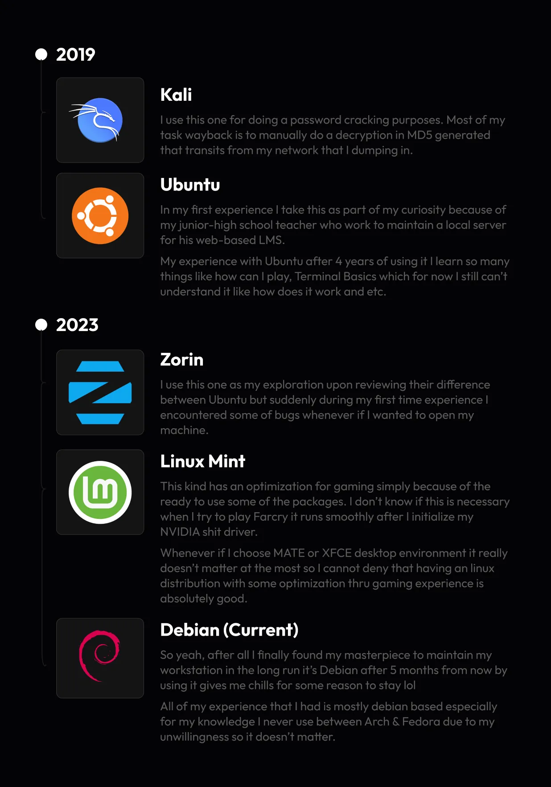
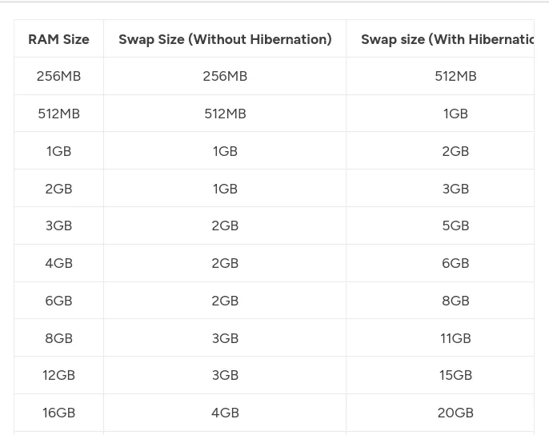
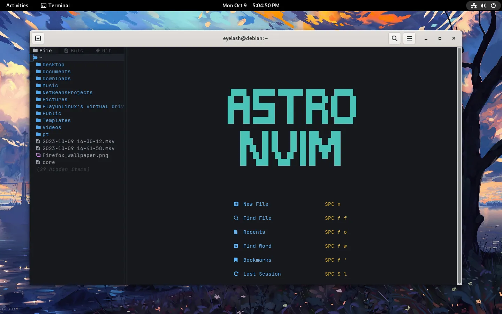
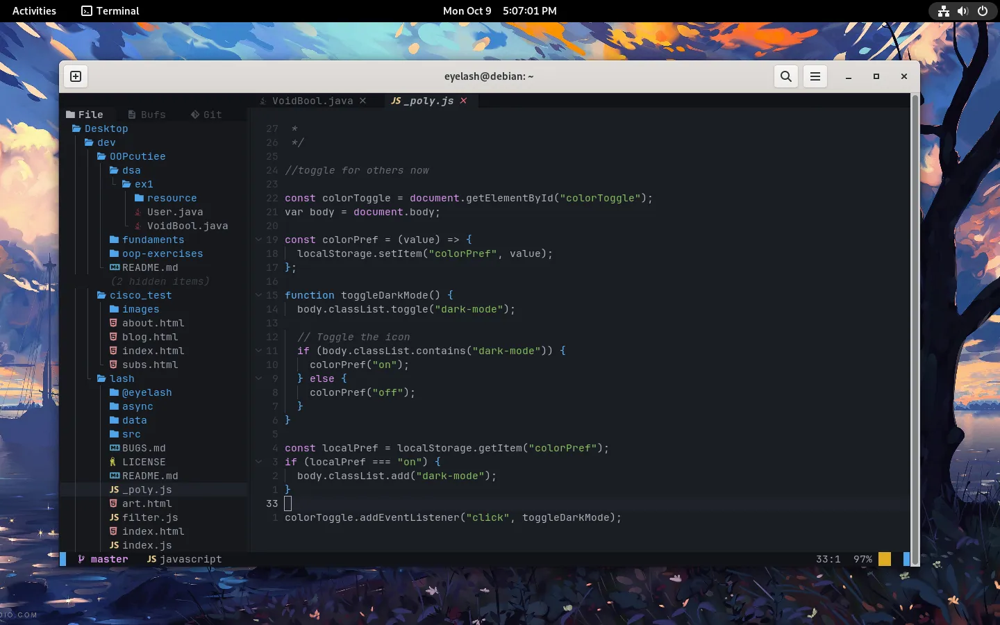

<!DOCTYPE html>
<html lang="en">
  <head>
    <meta charset="UTF-8" />
    <meta name="viewport" content="width=device-width, initial-scale=1.0" />
    <meta name="description" content="Explore by reading..." />
    <meta name="application-name" content="lash (personal)" />
    <meta name="keywords" content="blog article, ph blog, eyelash, lash" />
    <meta name="referrer" content="origin-when-cross-origin" />
    <meta name="creator" content="unknown" />
    <link rel="canonical" href="https://lashmono.space" />
    <link
      rel="alternate"
      hreflang="en-US"
      href="https://lashmono.space/en-US"
    />
    <meta
      name="format-detection"
      content="telephone=no, address=no, email=no"
    />
    <meta property="og:title" content="Programming setup?" />
    <meta property="og:description" content="Explore by reading..." />
    <meta property="og:url" content="https://lashmono.space" />
    <meta property="og:site_name" content="lash - stories" />
    <meta
      property="og:image"
      content="https://lashmono.space/async/prod/akame-seo-pt2.webp"
    />
    <meta property="og:image:width" content="1200" />
    <meta property="og:image:height" content="630" />
    <meta name="twitter:card" content="summary_large_image" />
    <meta name="twitter:title" content="Programming setup?" />
    <meta name="twitter:description" content="Explore by reading..." />
    <meta
      name="twitter:image"
      content="https://lashmono.space/async/prod/akame-seo-pt2.webp"
    />
    <link rel="preconnect" href="https://fonts.googleapis.com" />
    <link rel="preconnect" href="https://fonts.gstatic.com" crossorigin />
    <link
      href="https://fonts.googleapis.com/css2?family=Outfit:wght@400;800&display=swap"
      rel="stylesheet"
    />
    <link
      rel="stylesheet"
      href="https://cdnjs.cloudflare.com/ajax/libs/font-awesome/6.4.2/css/all.min.css"
      integrity="sha512-z3gLpd7yknf1YoNbCzqRKc4qyor8gaKU1qmn+CShxbuBusANI9QpRohGBreCFkKxLhei6S9CQXFEbbKuqLg0DA=="
      crossorigin="anonymous"
      referrerpolicy="no-referrer"
    />
    <link
      href="https://unpkg.com/boxicons@2.1.4/css/boxicons.min.css"
      rel="stylesheet"
    />
    <link rel="stylesheet" type="text/css" href="../../src/mono/art.css" />
    <script src="../../_poly.js" type="module"></script>
    <title>Programming setup?</title>
  </head>
  <body>
    <div class="scrollbtn" id="scrollTop">
      <i class="fas fa-arrow-up"></i>
    </div>
    <header class="lash-nav-contain">
      <div class="lash-parent">
        <div class="lash-logo"></div>
        <div class="lash-toggle" id="colorToggle">
          <i class="fa-regular fa-sun"></i>
        </div>
      </div>
    </header>
    <aside class="article-banner">
      
    </aside>
    <main class="article-container">
      <aside class="article-parent">
        <article class="lash-article-body">
          <!-- sponsored by niggachad -->
          <noscript>
            <div class="lash-noscript">
              
              <header>
                Wait bitch I ask you so what makes you think that you can find
                some non-javascript websites?
              </header>
              <figcaption>
                Stop being delusional you're just feeding your ass in disbeliefs
                that will never be.
              </figcaption>
            </div>
          </noscript>
          <figure class="lash-min-read">18 min read</figure>
          <header class="lash-article-header">My Programming Setup</header>
          <figcaption>
            Heylow, wassup guys let me allow you to flex something a small thing
            like what's my ideal IDE, what's my favorite OS, what's my
            prefferred hardware things and so much more this is totally implies
            for my career between designer & developer btw.
          </figcaption>
          <figcaption>
            The views and perspective of every single tech-savvy is that some of
            the advice can affect your discretion upon learning many digital
            things. Therefore, this article may only tell the opinion coming the
            author itself honestly.
          </figcaption>
          <figcaption>
            So when considering to look for what's their typically taste to
            everything I suggest to ask yourself like where you feel better at
            the most, how you maintain productivity by using these things, how
            does the tools may help you to improve your workflow and how this
            thing could actually be too long last for normal days.
          </figcaption>
          <figcaption>
            The idea of tools to me is that it's normal to have an revolutionize
            every single year and yet some of guys will practically tell a lie
            for you to encourage and deal with different things which it seems
            like you're not familiar with.
          </figcaption>
          <figcaption>
            So, in these article let's take a head to share all of my tools that
            I used for maintaining my productivity every single day let me
            repeat all of things that I wanted to share is related to design &
            development process.
          </figcaption>
          <figcaption>
            <div class="figheader">UI Design things.</div>
          </figcaption>
          <figcaption>
            Everyday, I use Figma to work with UI for my clients most of them
            are frequently international based I like their sense of critical
            thinking compared to my locally based client which I totally
            sometimes I find it not theoretical when they wanted to revise or
            add some important features just for their software.
          </figcaption>
          <figcaption>
            Based, on my experience it's normal to have an worst situation but
            the essence to me is that if I appreciate the value what I deserve I
            can think that the kind of outcome in return should be replicate to
            time that I spend to look for hangouts.
          </figcaption>
          <figcaption>
            Personally, after duty I make a plan to explore other best travel
            spots in my country (Philippines) like Laguna, Zambales and Makati
            for just hiking around the hotel & beach right there. Someday, I'm
            gonna leave my country to express my cultural revisions including
            the quality life difference to experience all thru my life.
          </figcaption>
          <figcaption>
            Anyway, Figma as of these date had now best features compared to my
            experience with Adobe XD i don't care about their partnerships but
            someday I'm gonna move my designs to Penpot software.
          </figcaption>
          <figcaption>
            Penpot is my a replacement to figma simply because I love using Open
            Source Softwares in my ideology the time to believe in using
            proprietary softwares for you is not totally a big deal but the idea
            to me is that I want the complex security more.
          </figcaption>
          <figcaption>
            Someday, I'm gonna have to write my blog why I preferred using Open
            Source Software rather than proprietary based.
          </figcaption>
          <picture>
            
            <span class="media-info">Penpot's Startup</span>
          </picture>
          <figcaption>
            As you can see this is quite similar to Figma design startup as of
            now I didn't make any projects but sooner I will move closer after
            my expiration of educational trial offer coming from Figma.
          </figcaption>
          <figcaption>
            The only difference between Penpot and Figma is the features and
            layers because for some reason Figma is more aggresive to maintain
            the user experience as well as Penpot.
          </figcaption>
          <figcaption>
            Penpot to me is doesn't wanted to reject many important features
            like we experience to Figma but in terms of security again I favor
            to use this because they had a pretty documentation same as figma so
            there's quite more discussion about competitive rivalry + marketing
            this is normal and this is so good.
          </figcaption>
          <figcaption>
            <div class="figheader">UI design takeaway.</div>
          </figcaption>
          <figcaption>
            My advise for the future UI designers is to learn first about the
            laws of UX because our design is just a visual prophet like it's
            just there then you can leave it after so this is my 3 reasonings:
            <ul>
              <li>
                By learning laws of UX can reflect for you to understand more
                weird things.
              </li>
              <li>
                By learning laws of UX will tell that if you work for case study
                is that you can explain clearly to your client or someone else
                for the simple questionings like why does this exist, and how
                does this feature could benefit compare to anything just like
                that.
              </li>
              <li>
                By learning laws of UX will tell that once you understand the
                aesthetic-usability effect would change your mind that all of
                your designs will be simple as much as possible. After it you
                will never wanted to work with more complicated + aesthetical
                colors which you can see around the 3D corners that's fine.
              </li>
            </ul>
          </figcaption>
          <picture>
            
            <span class="media-info"
              >Laws of UX | My Good Resource to Learn</span
            >
          </picture>
          <figcaption>
            Then, after you can freely do whatever you wish to improve your UI
            designs upto the average level scale of artistic thinking when I
            wanted to use the word "professional" it really doesn't look like
            that much it's just about your productivity + creativity level very
            likely.
          </figcaption>
          <figcaption>
            <div class="figheader">GNU / Linux linux linux (OS based).</div>
          </figcaption>
          <figcaption>
            There you have it, we've had been using Windows for more than
            decades of innovating to understand the fundamentals of technology
            and yet as a pragmatic person I still refuse to engage for some of
            the important sessions which leds to make it as a opportunity.
          </figcaption>
          <figcaption>
            I still refuse simply because of their long time engaging of
            manipulative abuse + monopoly like why would people necessary in
            their beliefs that when you buy a computer you need to pay also for
            the Operating System itself which I really don't like it in the
            first place simply it really doesn't help at all.
          </figcaption>
          <figcaption>
            That's why the majority of the tech-savvy people for now prefer to
            use a crackdown software for machine to hallucinate all of the PRO
            likely features does Windows had in order to use it for free that's
            how those disbeliefs surrounds for the majority of people which they
            tend to not know about.
          </figcaption>
          <figcaption>
            What I can tell that all of these beliefs inside Microsoft it's so
            different around the Linux World you cannot do all of these fucking
            things even if you run out of many weird errors that you might see
            in your windows machine.
          </figcaption>
          <figcaption>
            Even, in the Apple based systems which I cannot give some clearly
            details because I've never own any apple devices in my life except
            for my dad who does have the iPod Mini when he was alive.
          </figcaption>
          <figcaption>
            So after stating my experience I switch to Linux as my personal
            workstation + learning opportunity which I tell my intention to
            reject Microsoft + Apple based systems in my life now.
          </figcaption>
          <figcaption>
            I start using Linux all wayback to 2018, my first linux distribution
            that I used is Kali that's one of responsibles for doing hacking &
            pentest simply because it contains many tools, scripts and ready to
            use softwares for you to begin with.
          </figcaption>
          <figcaption>
            Here's the whole experience that I ever deal with Linux up to now.
          </figcaption>
          <picture>
            
            <span class="media-info"
              >My whole experience in GNU/Linux (Still didn't learn tbh)</span
            >
          </picture>
          <figcaption>
            As you can see at the moment is that most of my entire linux
            experience is frequently based on Ubuntu because of my eager to look
            for basic experience before I switch to Debian to resonate their own
            set of rules
          </figcaption>
          <figcaption>
            <div class="figheader">Recommendations (for non linux users).</div>
          </figcaption>
          <figcaption>
            To understand almost of the linux environment whether it's just for
            curiosity or it wasn't we need to properly understand the basic UNIX
            commands first then we can proceed now to other dimensions in order
            to know how does the UNIX operating system looks like in the long
            run.
          </figcaption>
          <figcaption>
            Aside from the basic UNIX commands is that we have to know about the
            linux file systems simply because of the huge difference compared to
            Windows and Apple.
          </figcaption>
          <picture>
            
            <span class="media-info"
              >Linux File System in a Scratch by Pandey</span
            >
          </picture>
          <figcaption>
            As you can see it's so fucking absurd that some of them I can't
            figure to understand because in general during my partioning I only
            use <b>/boot</b> and <b>/home</b> directory then I will be provide
            some of those for Linux Swap.
          </figcaption>
          <picture>
            
            <span class="media-info">https://itsfoss.com/swap-size/</span>
          </picture>
          <figcaption>
            As my experience, I don't know if by allocating some of those for
            linux swap is still essential as of these date I just want to do it
            very quickly because in my browser I used to run more than 15 tabs
            since I have my dual monitor setup by the way.
          </figcaption>
          <figcaption>
            By providing linux swap while partioning your linux operating system
            can benefit for our simultaneous operations that we're dealing off
            especially for the future so that's it for recommendation.
          </figcaption>
          <figcaption>
            <div class="figheader">IDE (such a bitch)</div>
          </figcaption>
          <figcaption>
            Majority of developers are still choosing Visual Studio Code for
            every single projects meanwhile, on the other universe I'm using Vim
            for half a year right now.
          </figcaption>
          <figcaption>
            My new replacement for Vim is also the NeoVIM this is the game
            changing for me because of it's simplicity but it's hard to
            understand because I'm still not familiar with VIM basics.
          </figcaption>
          <picture>
            
            
            <span class="media-info">AstroNVIM Plugin (I'm using Neovim)</span>
          </picture>
          <figcaption>
            I'm totally aware that you don't have to overthink about the VIM
            because we just wanted to stick with useful keyboard commands by
            looking for the example anywhere and yet in terms of configuration
            as of these date I'm still didn't make any changes upon the missing
            important configurations so it totally pisses me off I think skill
            issue hmm probably I don't know.
          </figcaption>
          <picture>
            <div id="GIPHY-embed">
              <iframe
                src="https://giphy.com/embed/V6JbqYxNl8RyAuFHAR"
                width="480"
                height="480"
                frameborder="0"
                class="giphy-embed"
                allowfullscreen
              ></iframe>
            </div>
            <span class="media-info">Sorry, I'm stupid all times.</span>
          </picture>
          <figcaption>
            Someday, I'm gonna make my own Neo / AstroVIM much better together
            with the VSC's features had like AutoSaving, Language Support,
            Compilers and many more stupid things that I still cannot do.
          </figcaption>
          <figcaption>
            Recently, as of these date I only use NeoVIM for web development
            like if I gonna have to run my local server I need more tabs in
            order to do so especially if I gonna have some version controlling
            it's the same thing.
          </figcaption>
          <figcaption>
            Sooner, I will gonna make my blog about the linux tutorials? I don't
            think so but sooner I can provide if I had too lol but that's it for
            my favorite OS thingy.
          </figcaption>
          <figcaption>
            <div class="figheader">Hardware (favorite thing).</div>
          </figcaption>
          <figcaption>
            Recently, I look around upon what's new between AMD and Intel
            arguably people tend to make some mistake when talking about the
            differences, also those benchmarks and many more that can be
            considered such a disbeliefs.
          </figcaption>
          <figcaption>
            As part of those tech-savvy people I can't say directly if those
            things are wrong because their argument is totally right but every
            single things there's such a whole meaning behind it so I can't
            blame that these kind of disbeliefs surrounds by many depending on
            what kind of people that you're talking too.
          </figcaption>
          <figcaption>
            Computer benchmarks to me is just an statistical analysis where you
            can see those computations like it's common that it really doesn't
            matter and yet it gives very much overthinking which sometimes
            you're ended up much worst but let me simplify that all of those
            kinds you see is totally a good material for you to know about.
          </figcaption>
          <figcaption>
            Having a complete details between CPU & GPU benchmarks starts within
            the scratch when trying to figure where it should be their limits,
            powers and other those things that you might been considered to
            settle by every balancing combined.
          </figcaption>
          <figcaption>
            So to balance very much more things we must had to think ourselves
            that when buying either a new PCs or just a PC component things.
            Well, it's a stupid + common thing that you should buy for what you
            really need at the most right?
          </figcaption>
          <figcaption>
            The basically problem here for these kind of scenario is the
            tech-savvy people itself and yet you will be experience round and
            round again by asking what's the good processors or even what's the
            good graphics card like what the fuck? We're in the cyberpunk era
            now this kind of trashy idea should be erase by many people right
            but how does this actually been a big-deal for the rest?
          </figcaption>
          <figcaption>
            Not every single of them does have an privilege to know these kind
            of things at most I think that's how I see they ended up for asking
            more and more again like what you see in the Hardware PC community.
          </figcaption>
          <figcaption>
            Now, there's a something relevant that I want to discuss this is
            about the power consumption I know that this is freakingly stupid
            ideal but I'm totally busiest person because in general I prefer to
            my computer that it should survive in the long run by using it all
            day even all night it sounds like a motherfucker right?
          </figcaption>
          <figcaption>
            But, this is me since 2009 so thanks to my parents for giving me
            also the right to use our computers all day but I don't care bitch
            honestly.
          </figcaption>
          <figcaption>
            In terms of power consumption instead of relying with personal based
            design AVRs why not to consider buying a voltage regulator for
            yourself? Especially if you have a RGB lights + AIO cooler in your
            System Unit as per guidelines for protecting our computers in power
            surge, brownouts and spikes.
          </figcaption>
          <figcaption>
            I think that would make sense since that's still good recommendation
            by majority of tech-savvy people like for the rest of us so I hope I
            can provide more blogs like this I'm totally run out of time I know
            this so long among articles that I had but please consider that what
            you read is can be helpful and benefit around the future so thank
            you for reading!
          </figcaption>
        </article>
      </aside>
      <footer class="after-reading">
        <figure>Enjoyed reading?</figure>
        <figcaption>
          Is it that so? you might not need to follow me on twitter stranger!
          just explore more articles here if you wanted to learn more things
          that I only know lol.
        </figcaption>
      </footer>
    </main>
    <script src="../separate.js"></script>
  </body>
</html>
